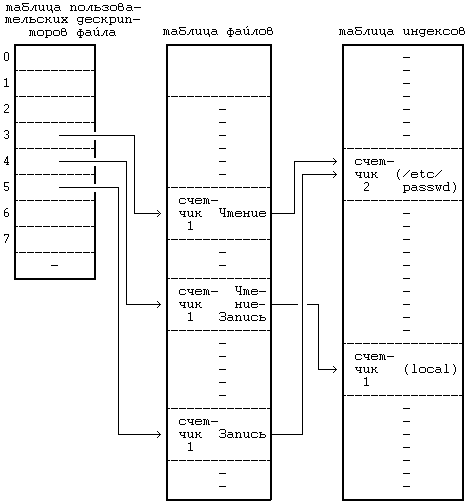
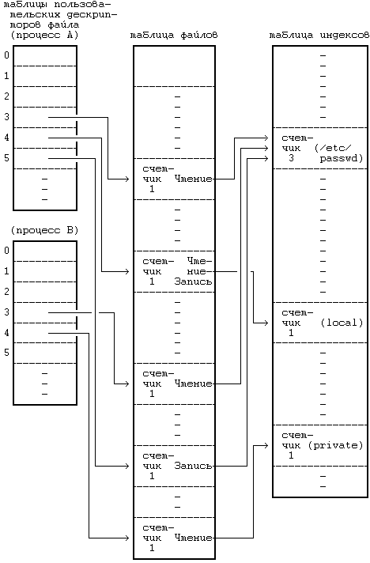

Вызов системной функции open (открыть файл) - это первый шаг, который должен сделать процесс, чтобы обратиться к данным в файле. Синтаксис вызова функции open:
fd = open(pathname,flags,modes);
где pathname - имя файла, flags указывает режим открытия (например, для чтения или записи), а modes содержит права доступа к файлу в случае, если файл создается. Системная функция open возвращает целое число (*), именуемое пользовательским дескриптором файла. Другие операции над файлами, такие как чтение, запись, позиционирование головок чтения-записи, воспроизведение дескриптора файла, установка параметров ввода-вывода, определение статуса файла и закрытие файла, используют значение дескриптора файла, возвращаемое системной функцией open.
Ядро просматривает файловую систему в поисках файла по его имени, используя алгоритм namei (см. Рисунок 5.2). Оно проверяет права на открытие файла после того, как обнаружит копию индекса файла в памяти, и выделяет открываемому файлу запись в таблице файлов. Запись таблицы файлов содержит указатель на индекс открытого файла и поле, в котором хранится смещение в байтах от начала файла до места, откуда предполагается начинать выполнение последующих операций чтения или записи. Ядро сбрасывает это смещение в 0 во время открытия файла, имея в виду, что исходная операция чтения или записи по умолчанию будет производиться с начала файла. С другой стороны, процесс может открыть файл в режиме записи в конец, в этом случае ядро устанавливает значение смещения, равное размеру файла. Ядро выделяет запись в личной (закрытой) таблице в адресном пространстве задачи, выделенном процессу (таблица эта называется таблицей пользовательских дескрипторов файлов), и запоминает указатель на эту запись. Указателем выступает дескриптор файла, возвращаемый пользователю. Запись в таблице пользовательских файлов указывает на запись в глобальной таблице файлов.
(*) Все системные функции возвращают в случае неудачного завершения код -1. Код возврата, равный -1, больше не будет упоминаться при рассмотрении синтаксиса вызова системных функций.
алгоритм open
входная информация: имя файла
режим открытия
права доступа (при создании файла)
выходная информация: дескриптор файла
{
превратить имя файла в идентификатор индекса (алгоритм
namei);
если (файл не существует или к нему не разрешен доступ)
возвратить (код ошибки);
выделить для индекса запись в таблице файлов, инициали-
зировать счетчик, смещение;
выделить запись в таблице пользовательских дескрипторов
файла, установить указатель на запись в таблице файлов;
если (режим открытия подразумевает усечение файла)
освободить все блоки файла (алгоритм free);
снять блокировку (с индекса); /* индекс заблокирован
выше, в алгоритме
namei */
возвратить (пользовательский дескриптор файла);
}
|
Рисунок 5.2. Алгоритм открытия файла
Предположим, что процесс, открывая файл "/etc/passwd" дважды, один раз только для чтения и один раз только для записи, и однажды файл "local" для чтения и для записи (**), выполняет следующий набор операторов:
fd1 = open("/etc/passwd",O_RDONLY);
fd2 = open("local",O_RDWR);
fd3 = open("/etc/passwd",O_WRONLY);
На Рисунке 5.3 показана взаимосвязь между таблицей индексов, таблицей файлов и таблицей пользовательских дескрипторов файла. Каждый вызов функции open возвращает процессу дескриптор файла, а соответствующая запись в таблице пользовательских дескрипторов файла указывает на уникальную запись в таблице файлов ядра, пусть даже один и тот же файл ("/etc/passwd") открывается дважды. Записи в таблице файлов для всех экземпляров одного и того же открытого файла указывают на одну запись в таблице индексов, хранящихся в памяти. Процесс может обращаться к файлу "/etc/passwd" с чтением или записью, но только через дескрипторы файла, имеющие значения 3 и 5 (см. Рисунок).Ядро запоминает разрешение на чтение или запись в файл в строке таблицы файлов, выделенной во время выполнения функции open. Предположим, что второй процесс выполняет следующий набор операторов:
(**) В описании вызова системной функции open содержатся три параметра (третий используется при открытии в режиме создания), но программисты обычно используют только первые два из них. Компилятор с языка Си не проверяет правильность количества параметров. В системе первые два параметра и третий (с любым "мусором", что бы ни произошло в стеке) передаются обычно ядру. Ядро не проверяет наличие третьего параметра, если только необходимость в нем не вытекает из значения второго параметра, что позволяет программистам указать только два параметра.

Рисунок 5.3. Структуры данных после открытия
fd1 = open("/etc/passwd",O_RDONLY);
fd2 = open("private",O_RDONLY);
На Рисунке 5.4 показана взаимосвязь между соответствующими структурами данных, когда оба процесса (и больше никто) имеют открытые файлы. Снова результатом каждого вызова функции open является выделение уникальной точки входа в таблице пользовательских дескрипторов файла и в таблице файлов ядра, и ядро хранит не более одной записи на каждый файл в таблице индексов, размещенных в памяти.
Запись в таблице пользовательских дескрипторов файла по умолчанию хранит смещение в файле до адреса следующей операции ввода-вывода и указывает непосредственно на точку входа в таблице индексов для файла, устраняя необходимость в отдельной таблице файлов ядра. Вышеприведенные примеры показывают взаимосвязь между записями таблицы пользовательских дескрипторов файла и записями в таблице файлов ядра типа "один к одному". Томпсон, однако, отмечает, что им была реализована таблица файлов как отдельная структура, позволяющая совместно использовать один и тот же указатель смещения нескольким пользовательским дескрипторам файла (см. [Thompson 78], стр.1943). В системных функциях dup и fork, рассматриваемых в разделах 5.13 и 7.1, при работе со структурами данных допускается такое совместное использование.

Рисунок 5.4. Структуры данных после того, как два процесса произвели открытие файлов
Первые три пользовательских дескриптора (0, 1 и 2) именуются дескрипторами файлов: стандартного ввода, стандартного вывода и стандартного файла ошибок. Процессы в системе UNIX по договоренности используют дескриптор файла стандартного ввода при чтении вводимой информации, дескриптор файла стандартного вывода при записи выводимой информации и дескриптор стандартного файла ошибок для записи сообщений об ошибках. В операционной системе нет никакого указания на то, что эти дескрипторы файлов являются специальными. Группа пользователей может условиться о том, что файловые дескрипторы, имеющие значения 4, 6 и 11, являются специальными, но более естественно начинать отсчет с 0 (как в языке Си). Принятие соглашения сразу всеми пользовательскими программами облегчит связь между ними при использовании каналов, в чем мы убедимся в дальнейшем, изучая главу 7. Обычно операторский терминал (см. главу 10) служит и в качестве стандартного ввода, и в качестве стандартного вывода и в качестве стандартного устройства вывода сообщений об ошибках.
Предыдущая глава || Оглавление || Следующая глава